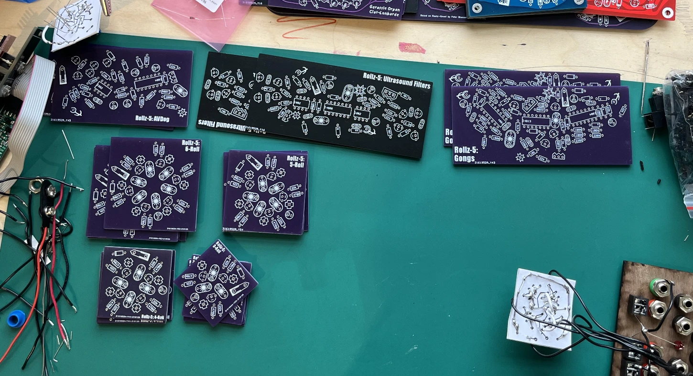

My Rollz5 Build
This was my first time building a ciat lonbarde diy instrument. The Rollz5 is the drum machine of the ciat lonbarde world, consisting of av dogs, which make undulating triangle oscillations, the gongs which make filter pingy sounds, toms and other tonal pulse, the ultrasound filters, which bring forward dc and emf content from the circuits forward, and the rolz, spiraling pulse sections, your trigger sequencer and sporatic pulse generator. Peter Explains the rolz5 better on his site and for the page of the plumbutter.
First, I started off practicing my soldering and building with the paper ciruit for one of the rolz.
I quickly switched to wanting to work with PCBs, as the paper circuits were going to be too time consuming to work with, and there were much more areas for failure with chaining all the paper circs in one enclosure (mostly worried about things touching and short circuiting).

I designed my panels with all the holes I wanted for the banana jacks, switches, 1/4in jacks and euro jacks in rhino and then laser cut a panel of cherry and a panel of walnut. I also salvaged my paper circ to begin putting it all together. the power for the indivisual pcbs are chained in series to a 9v clip
I finished soldering all my PCBs and started testing out the circuits. My main fails in this build were using small trimpots instead of big ones (i was trying to save space). I couldn't really find a way to mount them to the panel properly from the back so i just ended up poking them thru the holes they were supposed to fit in, whuch didnt look that good and wasnt that practical for the build. Another problem I had was using different capacitors on single rolz circuits, the cap values are all supposed to be the same for the single pcb, for instance all 33uf caps on the 6 rolz, and all 22uf on the 4 rolz, etc. This introduced a bunch of weird behavior right from the start on the rolz section of the rollz5. Another issue was deciding to fill the whole thing with plasti-dip for whatever reason lol. I was trying to protect the connections I was making and provent it from falling apart, and it made it into a solid brick pretty much, but made it impossible to fix anything that I had soldered. Another one was using crappy jacks, these jacks are fun because you can touch them and make connections with contact, but for this build I wish I had used Johnson banana jacks which are much more sturdy and would last way longer, my issue playing with my build over time is that sometimes the connections would just loosen, and I've already had to replace a couple jacks with stronger ones in the past year. I think next time I also would have liked to have a better plan for organizing the pcbs behind the panel, as they ended up taking up a lot of space in the build, when I finally figured out how I wanted to make the rest of the enclosure. I would have done something like how they do serge diy boats, with standoffs and brackets.
My friend Maddie helped me with making the enclosure!! I couldn't tell you anything about the woodworking but I'm really happy with it, aside from it being kind of way bigger than I wanted.